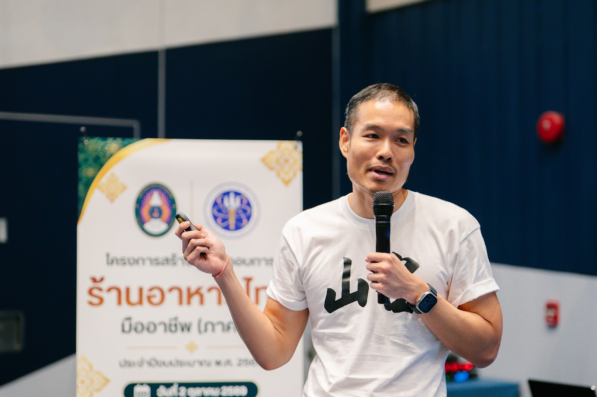
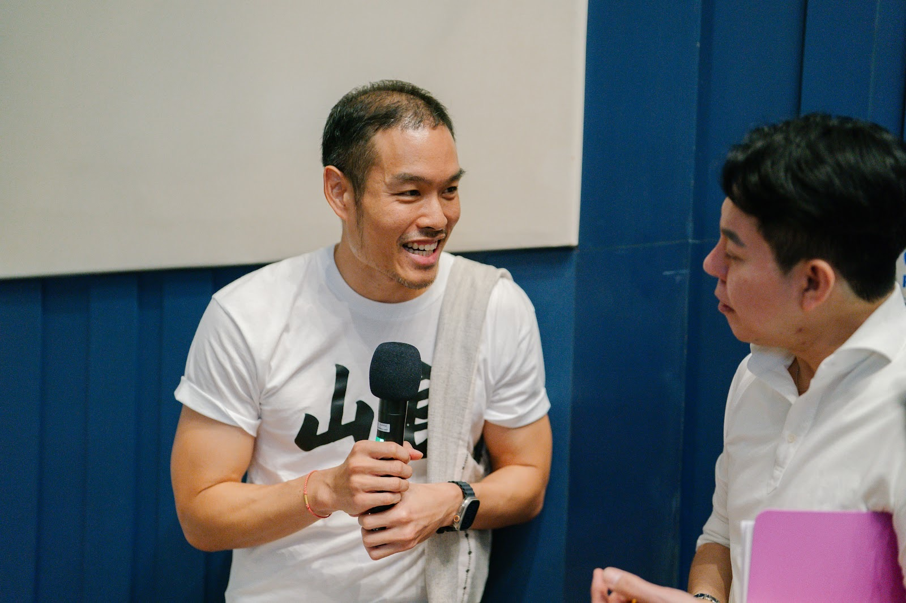
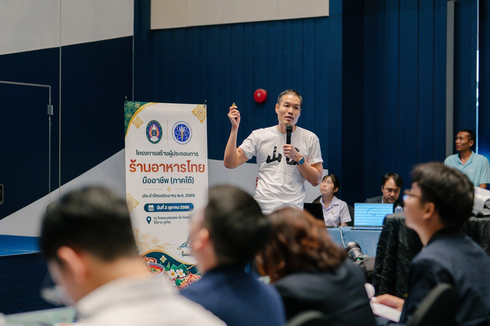
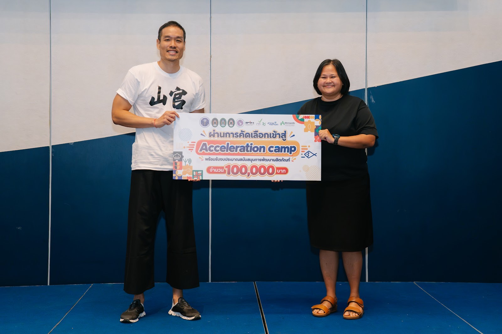
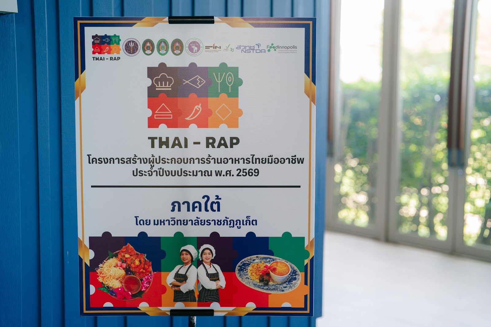

2026 · award · event
Pitching day, Thai Restaurant Entrepreneur Programme (South) — Toh Daeng's chicken massaman makes the Acceleration camp





Original text in Thai
โครงการสร้างผู้ประกอบการร้านอาหารไทยมืออาชีพ (ภาคใต้) ปีงบประมาณ 2569 (THAI-RAP) จัดโดยมหาวิทยาลัยราชภัฏภูเก็ต · วันที่ 2 ตุลาคม 2569 เป็น Pitching day ที่สแปลช บีช รีสอร์ต ไม้ขาว
ผมขึ้น pitch ในนามโต๊ะแดง เรื่องมัสมั่นไก่ — แกงสะม้านภูเก็ตสูตรอาม่า จานที่ลูกค้าต่างชาติกลับมากินซ้ำมากที่สุด ขายในร้านต่อเนื่องมากว่า 6 ปี · สิ่งที่ pitch คือโมเดลที่สองของร้าน: ทำมัสมั่นไก่แช่แข็งจากครัวกลาง แล้วพาแบรนด์ออกไปไกลกว่าหน้าร้าน ถึงคนที่อยากทำกินเองที่บ้าน โรงแรมและวิลล่าในภูเก็ต และคนทั่วประเทศ
ช่วงชิม ผมยืนเล่าให้กรรมการฟังที่โต๊ะอาหาร แล้วขึ้นนำเสนอหน้าห้อง · ผลคือผ่านการคัดเลือกเข้าสู่ Acceleration camp
ภาพ: โครงการ THAI-RAP ภาคใต้ · มหาวิทยาลัยราชภัฏภูเก็ต